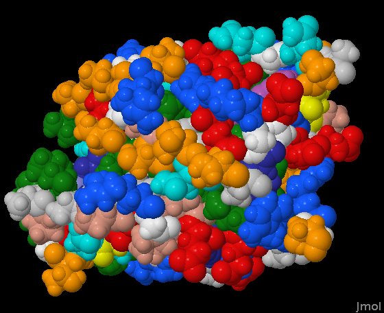
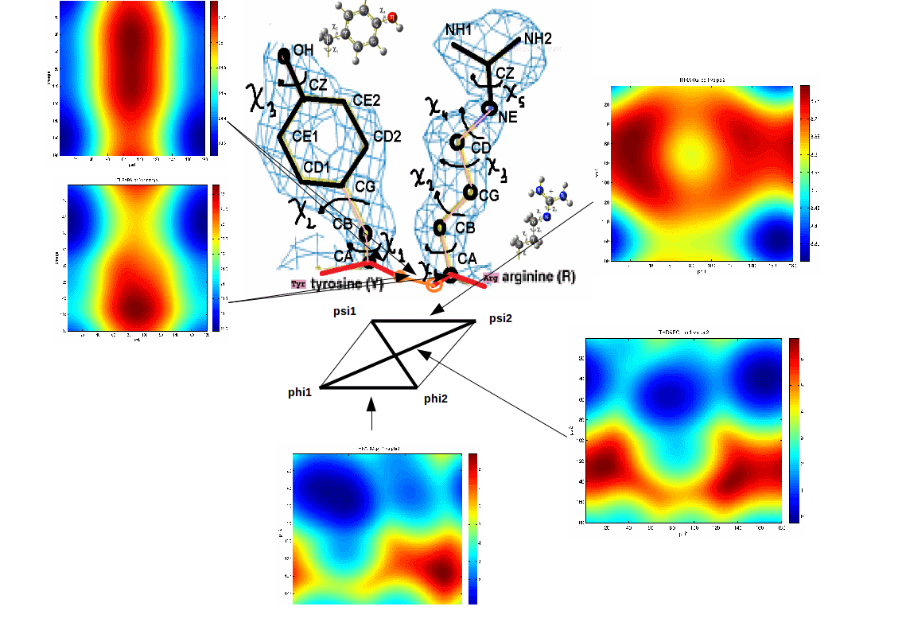
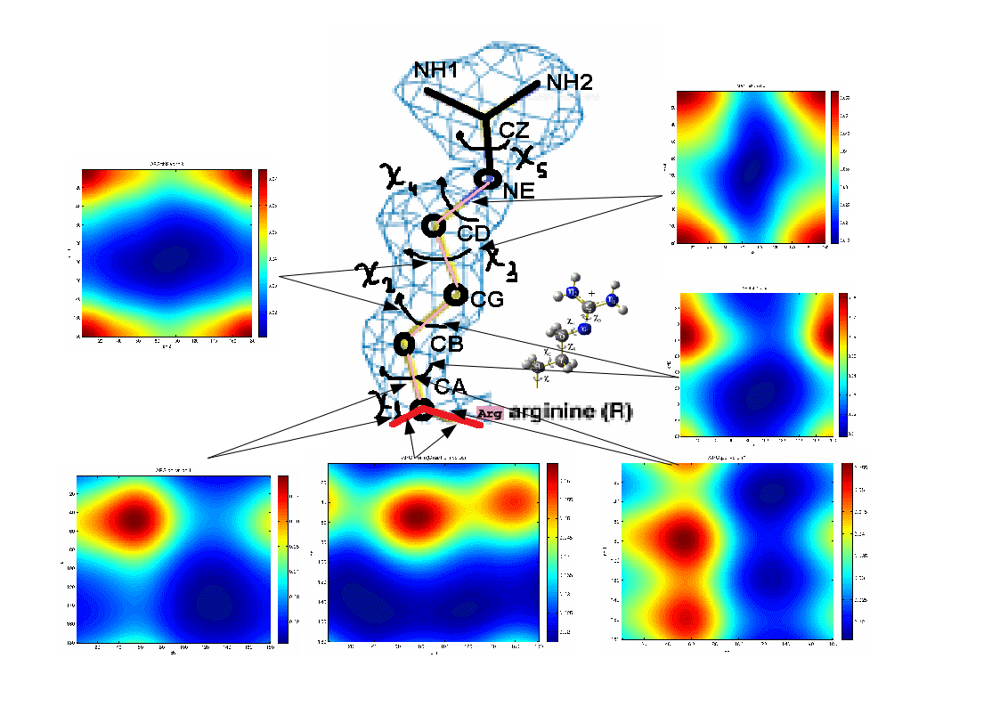

Description
Intrudution:
Most of the macromolecules operating inside the living organisms are proteins. All of them consist of long polymers composed by twenty different types of monomer units called amino acids, differing each other by the three-dimensional conformation in which they fold after the biosynthesis and in which they are biologically active. During the protein biosynthesis the amino acids are assembled together in a specific sequence according to the rule of the genetic code. The final product of this process, the polypeptide chain, undergoes a folding process reaching the protein proper stable state. Its final conformation varies and hence the functions the protein is able to perform, according to the sequence of amino acids proper of each protein.
The protein folding represents a process of fundamental importance. The remarkable rapidity and reproducibility of this process still present many elements which are not yet completely understood. It is commonly recognised that the folding of the protein chain is a thermodynamically driven process, and that the biologically active protein conformation represents the energetic balance of various kinds of interactions between protein groups, and between these groups and the surrounding medium. If on the one hand this justifies a physical approach on the other one the high complexity of the system seems to prevent any possibility of solution to the problem, from a microscopical point of view. Despite this open issues, many facts about the folding of small single-domain proteins are well established. The physical properties of most of them in the folded stable conformation do not change, or change very little, when the environment is altered by changes in temperature, pH, or pressure, until a threshold is overcome. When this point is reached the protein denaturation occurs, a sudden complete unfolding of the protein. The unfolding transition is a two-state cooperative phenomenon, with only the native fully folded and the denatured fully unfolded states present. Partially unfolded structures are unstable relative to both states. In order to understand the connection between amino acid sequence and folding kinetics, several studies involved concepts borrowed by the statistical mechanics of disordered systems. The main idea is that, the high complexity of such systems can be conveniently described as a stochastic process. A typical feature is the presence of conflicting forces and geometric constraints, the system can not satisfy all the impositions at the same time. As a consequence of this fact an unique optimal state does not exist, and the system behaviour is governed by the rugged energy landscape, with huge number of minima separated by high barriers. This makes the folding trajectory of hard simulation using conventional multibody dynamics. Since the dynamic usually proceeds by long waits periods around optimal state followed by sudden jumps from one state to another.
The protein dynamics is currently addressed from two perspectives. The first, thermodynamic-centric, line of research is mainly concerned with stability and uniqueness of the native structure and how it is defined by the protein sequence. The second, kinetics-centric, line of research is concerned with the mechanisms and time scales for folding. Both aspects of the protein folding problem have received much attention over the past 60 years, and attempts to build coarse-grained models of folding, which can yield general insights without sacrificing predictive power, is an ongoing collective work.

Constructing coarse-grained force fields is a much greater challenge than constructing all-atom force fields; the physical foundations of coarse-grained force fields were discovered only relatively recently. These force fields are divided into two main categories: knowledge-based and physics-based. Knowledge-based force fields are derived based on statistics determined from structural databases, while physics-based force fields relate all-atom energy surfaces to effective coarse-grained energy surfaces. Physics-based force fields can, in turn, be divided into neoclassical force fields, in which the functional form is copied from that of all-atom force fields (e.g., the very widely applied MARTINI force field), and those that are based on the understanding of a coarse-grained force field as a potential of mean force in which the degrees of freedom that are not omitted from the model have been integrated out.
The Library
This Library is the base for a project on Packing Charged Multibody Systems with implicit solvation. The protein is modeled as a charded multibody system and the presented scripts are used for the extraction of statistical dada from large samples of crystal structures, selected from the PDB. The generated statistics are used on two type of libraries for multibody dynamics: a library with statistical potentials for pairs of dihedral angles in the main chain local conformation, and a rotamer libraries. Those are defined as a set of discrete probability distributions, and used to generate internal forces on multibody systems.
Examples of statistical potentials generated from two dihedral angles on a protein main chain: 
Examples of statistical potentials generated between dihedral angles and rotamers in an amino acid: 